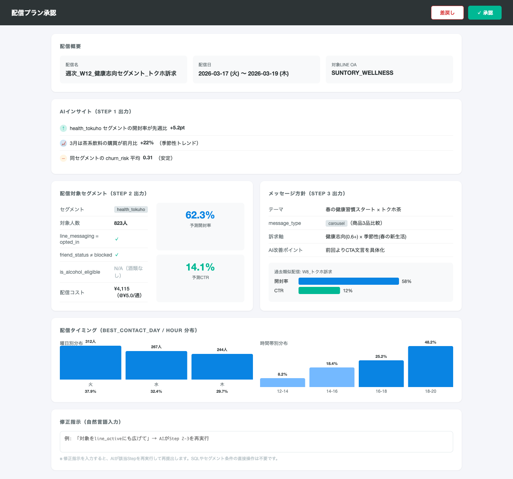
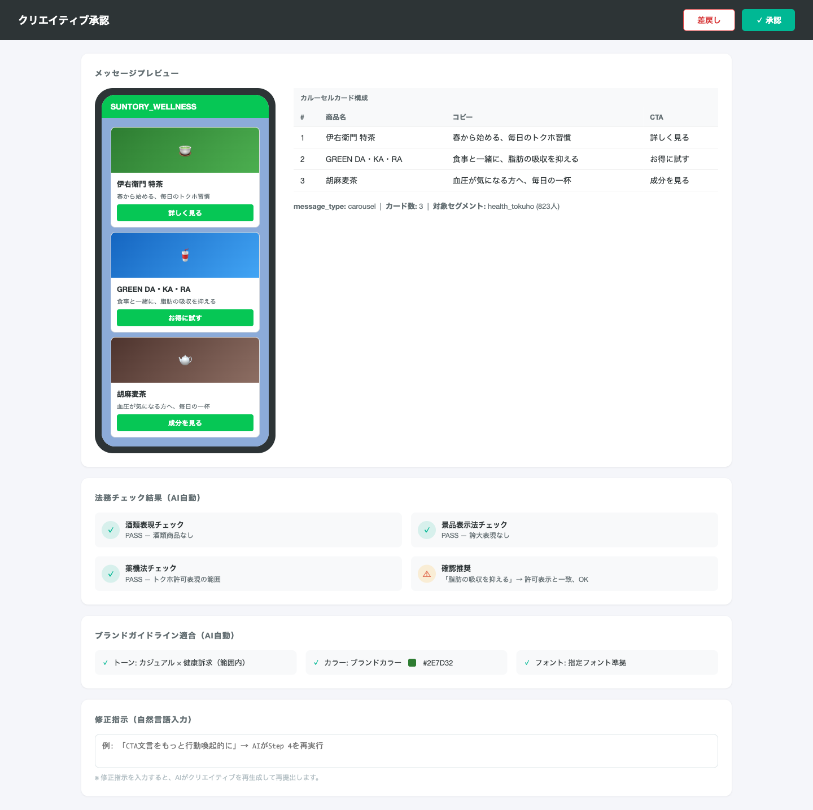
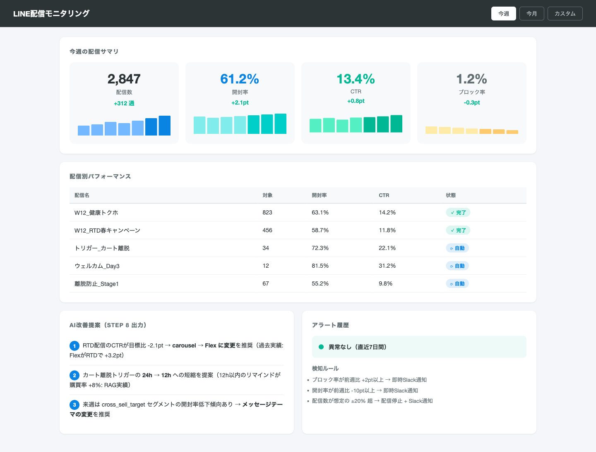
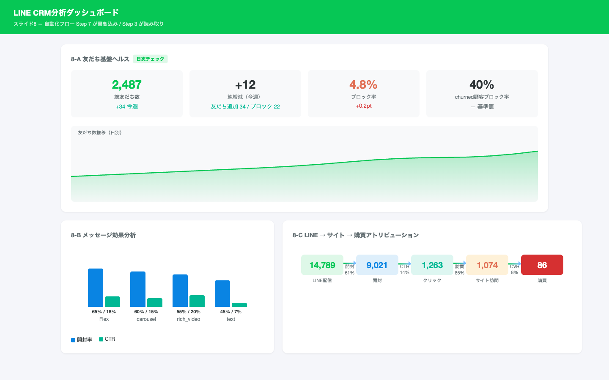
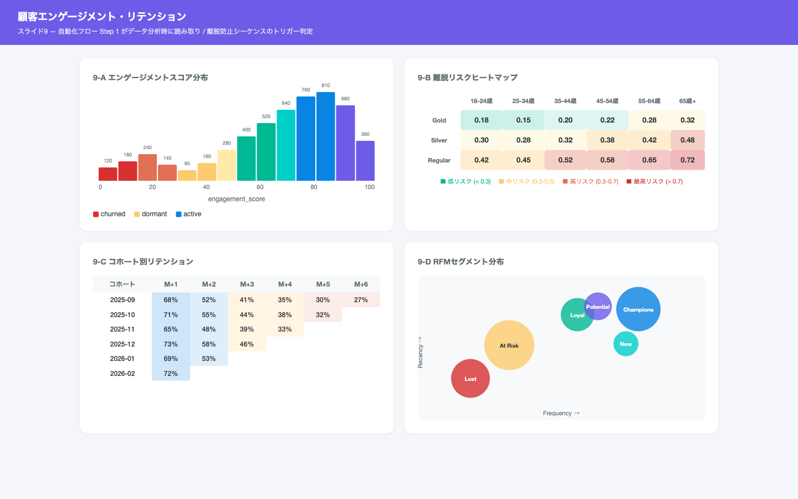
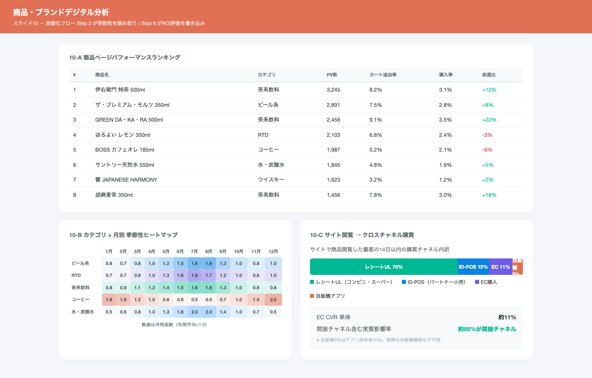
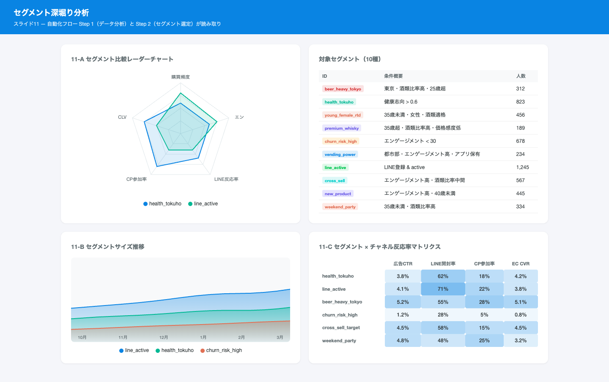

AI配信基盤の設計と
ユーザージャーニー別ダッシュボード
2026
AIオーケストレーターが顧客データを分析し、最適なメディア・タイミング・コンテンツを自動選定して配信する。まずLINE配信を構築し、AI基盤を段階的にメディア横展開する。
| 優先度 | 対象 | 主な取り組み |
|---|---|---|
| ◎ | LINE配信 | AIオーケストレーター構築、RAG/MCP基盤整備、全8工程自動化 |
| ◯ | メール追加 | メールアダプター、LINE知見の横展開、重複排除 |
| △ | 広告・Push | クロスメディア最適配分、統合キャンペーン、予算自動配分 |
顧客ジャーニーの各段階にAI自動化の機会がある。ROI・実現可能性が最も高いLINE配信（関係・深化）を最優先で着手し、構築したAI基盤を次期以降で横展開する。
| ジャーニー | AI適用の余地 | 現状の課題 | 優先度 | 対応方針 |
|---|---|---|---|---|
| 認知 | 広告ターゲティング最適化、予算自動配分 | 広告運用は別チーム。統合データ基盤が未整備 | △ | AI基盤＋広告アダプターで横展開 |
| 興味 | サイト内レコメンド、パーソナライズドLP生成 | ECサイト改修が必要。配信より優先度低 | △ | RAGナレッジを活用したレコメンドとして対応 |
| 行動 | 購買・CP参加をトリガーにしたリアルタイム配信 | イベント駆動の仕組みがない | ◯ | トリガー配信で一部対応。メール追加は次期 |
| 関係 | LINE配信の分析→企画→制作→配信→測定→改善の全8工程を自動化 | 手作業で週20時間超。属人化・品質ばらつき | ◎ | 本設計の中核。8工程AIパイプラインを構築 |
| 深化 | 離脱予兆検知→リテンション施策の自動エスカレーション | 離脱に気づくのが遅い。対応が画一的 | ◎ | 本設計で対応。8工程基盤+トリガー配信 |
全体アーキテクチャと技術スタック
| レイヤー | コンポーネント | 技術選定 | 役割 |
|---|---|---|---|
| AIエンジン | LLM | Claude API | 分析・企画・コピーライティング・改善提案 |
| RAG | Pinecone / pgvector | 過去実績・ガイドライン・法務ルール検索 | |
| MCP連携 | CDP MCP | BigQuery接続 | 12エンティティへのクエリ実行 |
| LINE MCP | Messaging API | OA管理・メッセージ送信・配信結果取得 | |
| Braze MCP | Braze REST API | セグメント同期・キャンペーン作成 |
技術スタックの各要素がどのようにデータを受け渡すかを示す。
| ナレッジカテゴリ | 具体的内容 | 更新頻度 |
|---|---|---|
| 過去配信実績 | message_type別の開封率・CTR、効果マトリクス | 配信後に自動追加 |
| ブランドガイドライン | トーン&マナー、使用可能/NG表現 | 四半期（手動） |
| 法務ルール | 酒類広告規制、景品表示法、LINE利用規約 | 法改正時（手動） |
| 商品情報 | 商品説明文・訴求ポイント・季節性情報 | 新商品投入時 |
| 季節性パターン | カテゴリ×月の販売傾向、気温相関 | 月次（自動） |
| Tool | 実行内容 |
|---|---|
query_segment | セグメント条件で顧客抽出 |
get_customer | 顧客プロファイル取得 |
get_computed | 算出属性取得 |
get_consent | 同意状態確認 |
get_purchases | 購買履歴取得 |
get_line_stats | LINE配信実績集計 |
| Tool | 実行内容 |
|---|---|
send_flex | Flexメッセージ配信 |
send_carousel | カルーセル配信 |
send_richvideo | リッチビデオ配信 |
get_delivery | 配信結果取得 |
list_oa | OAリスト・配信枠確認 |
| Tool | 実行内容 |
|---|---|
request_approval | 承認ボタン付き通知 |
send_report | レポート通知 |
sync_segment | セグメント同期 |
create_campaign | キャンペーン作成 |
get_product | 商品マスタ取得 |
8工程の詳細と承認ゲート
| Step | 項目 | 詳細 |
|---|---|---|
| Step 1 データ分析 Full Auto | データ取得 | CDP MCP経由でengagement_score、churn_risk_score、購買データを取得 |
| 実績検索 | RAGから過去配信実績を検索 | |
| 分析内容 | セグメント別トレンド・季節性・異常値を分析 | |
| 出力 | インサイトレポート（セグメント別KPI推移、推奨アクション） | |
| Step 2 セグメント選定 Full Auto | 対象選定 | segment_membershipからLINE配信対象を選定 |
| 法的フィルタ | consent_status=opted_in、friend_status≠blocked、is_alcohol_eligible（酒類時） | |
| 出力 | 配信対象リスト + 予測開封率 |
| Step | 項目 | 詳細 |
|---|---|---|
| Step 3 メッセージ企画 → 承認① | 照合 | preferred_category / drinking_sceneをRAGで過去実績と照合 |
| 企画 | テーマ・メッセージ方針を起案 | |
| 推奨 | 最適message_type（text / flex / rich_video / carousel）を推奨 | |
| 出力 | 配信プラン（テーマ、方針、タイミング案、想定KPI） | |
| Step 4 クリエイティブ制作 → 承認② | 生成 | 承認済みプランに基づきFlexメッセージJSON / カルーセル / コピーを生成 |
| 参照 | RAGからブランドガイドライン参照 | |
| 商品情報 | Product MCPから商品画像・情報を取得 | |
| チェック | 法務自動チェック（酒類表現・景品表示法） | |
| 出力 | メッセージプレビュー + 法務チェック結果 |
| Step | 処理 | AIの具体的な動き | 安全装置 |
|---|---|---|---|
| 5 配信設定 | best_contact_day/hourに基づくスケジュール最適化 | OA選定（5アカウント）、週2通上限管理 | — |
| 6 配信実行 | 配信直前に法的フィルタ再実行（三重チェック） | LINE MCP / Braze MCP経由で配信 | 配信数±20%超で自動停止 |
| 7 効果測定 | 配信→開封→クリック ファネルを自動集計 | 異常値検知時にSlack通知 | ブロック率スパイク検知 |
| 8 改善提案 | 効果測定結果をRAGの過去実績と比較 | 改善点を次回Step 1に自動投入 | — |
定期・トリガー・ウェルカム・離脱防止
| 曜日 | 担当 | 処理内容 |
|---|---|---|
| 月曜AM | AI | データ分析→セグメント選定→メッセージ企画（Step 1-3） |
| 月曜PM | 人間+AI | 承認①→クリエイティブ制作→承認②（Step 4） |
| 火〜木 | AI | 各顧客の最適タイミングで自動配信（Step 5-6） |
| 金曜 | AI | 効果測定 + 改善提案 → 次週月曜のStep 1入力（Step 7-8） |
| トリガー | データソース | AI処理 | 承認 |
|---|---|---|---|
| EC購入完了 | digital_behavior_log | 購買商品からレコメンドをRAG生成 | 不要 |
| カート離脱（24h） | digital_behavior_log | price_sensitivity連動クーポン額決定 | 不要 |
| CP参加 | campaign_participation | 参加CP種別で次回案内を自動選定 | 不要 |
| 自販機アプリ購入 | vending_machine_event | スタンプ進捗計算 | 不要 |
| エンゲージメント急落 | computed_attributes | 類似ケースの効果的施策を検索 | 要承認 |
| churn_risk > 0.7 | computed_attributes | CLV×リテンション確率でオファー額最適化 | 要承認 |
is_alcohol_eligible で商品レコメンドを自動分岐campaign_master から実施中CPをAIが自動選定computed_attributes に自動反映churn_risk_scoreに応じたAI自動エスカレーション
| Stage | churn_risk | AI処理 |
|---|---|---|
| 1 | 0.6–0.7 | RAGで類似顧客の反応が良かったコンテンツを検索、rich_videoで案内 |
| 2 | 0.7–0.8 | price_sensitivity × CLVからクーポン額を最適化 |
| 3 | > 0.8 | LLMがパーソナルメッセージを個別生成 → 承認ゲート経由 |
AI自動化における業界固有のリスク対応
制約事項についてもLLM（OSSモデル含む）で対応する。
| # | 制約 | 自動化への影響 | AI/システムの対応策 |
|---|---|---|---|
| 1 | 酒類広告規制 | 未成年・非適格者への配信排除 | Step 2・6でis_alcohol_eligible + consent_statusの2段階チェック |
| 2 | 季節性の強い商品 | 月次自動切替が必要 | RAGに季節パターン格納 + 外部気温API連携 |
| 3 | 間接購買チャネル | LINE→コンビニ購買の効果測定困難 | レシートUL紐付けで間接効果を推定 |
| 4 | 5つのLINE OA | 同一顧客への重複防止 | unified_customer_id × line_oa_id × 週で履歴確認、週2通上限 |
| 5 | LINE従量課金 | 無駄な配信 = コスト増 | predicted_clv × 開封率予測でROI閾値フィルタ |
自動化フローとダッシュボードの接続
| 自動化工程 | 読み取るDB | 書き込むDB |
|---|---|---|
| Step 1 データ分析 | 4 リテンション、7 セグメント | — |
| Step 2 セグメント選定 | 7 セグメント比較・反応率 | — |
| Step 3 メッセージ企画 | 3 LINE CRM、6 商品デジタル | — |
| Step 7 効果測定 | — | 3 LINE CRM |
| Step 8 改善提案 | — | 6 クロスチャネル購買 |
マーケターが操作する3つの画面
AI自動化フロー全体で人間が操作する画面は以下の3つのみ。それ以外は全てAIが自律処理する。
| # | 画面名 | タイミング | 目的 |
|---|---|---|---|
| A | 配信プラン承認画面 | 承認ゲート①（Step 3→4） | 配信対象・メッセージ方針・タイミングの承認 |
| B | クリエイティブ承認画面 | 承認ゲート②（Step 4→5） | メッセージプレビュー・法務チェック結果の確認 |
| C | モニタリングダッシュボード | 常時（異常時にSlack通知） | 効果測定結果・異常検知の確認 |

| 項目 | 値 |
|---|---|
| セグメント | health_tokuho |
| 対象人数 | 823人 |
| line_messaging = opted_in | ✓ |
| friend_status ≠ blocked | ✓ |
| 予測開封率 | 62.3% |
| 予測CTR | 14.1% |
| 配信コスト | ¥4,115（@¥5.0/通） |
| 項目 | 値 |
|---|---|
| テーマ | 春の健康習慣 × トクホ茶 |
| message_type | carousel（3品比較） |
| 訴求軸 | 健康志向(0.6+) × 季節性 |
| 過去類似配信 | 開封率58%, CTR 12% |
| AI改善ポイント | CTA文言を具体化 |
| チェック項目 | 結果 |
|---|---|
| 酒類表現 | ✓ PASS |
| 景品表示法 | ✓ PASS |
| 薬機法 | ✓ PASS |
| 確認推奨 | ⚠ 許可表示と一致、OK |

| カード# | 商品名 | コピー | CTA |
|---|---|---|---|
| 1 | 伊右衛門 特茶 | 「春から始める、毎日のトクホ習慣」 | 詳しく見る |
| 2 | GREEN DA・KA・RA | 「食事と一緒に、脂肪の吸収を抑える」 | お得に試す |
| 3 | 胡麻麦茶 | 「血圧が気になる方へ、毎日の一杯」 | 成分を見る |
| 指標 | 今週 | 前週比 |
|---|---|---|
| 配信数 | 2,847通 | +312 |
| 開封率 | 61.2% | +2.1pt |
| CTR | 13.4% | +0.8pt |
| ブロック率 | 1.2% | -0.3pt |
| ルール | 閾値 | アクション |
|---|---|---|
| ブロック率スパイク | +2pt/週 | Slack通知 |
| 開封率急落 | -10pt/週 | Slack通知 |
| 配信数異常 | ±20%超 | 自動停止 |

LINE CRM / リテンション / 商品デジタル / セグメント




| ID | 条件概要 |
|---|---|
| beer_heavy_tokyo | 東京・酒類比率高・25歳超 |
| health_tokuho | 健康志向 > 0.6 |
| young_female_rtd | 35歳未満・女性・酒類適格 |
| premium_whisky | 35歳超・酒類比率高・価格感度低 |
| churn_risk_high | エンゲージメント < 30 |
| vending_power_user | 都市部・エンゲージメント高・自販機アプリ保有 |
| line_active | LINE登録 & active |
| cross_sell_target | エンゲージメント高・酒類比率中間 |
| new_product_early | エンゲージメント高・40歳未満 |
| weekend_party | 35歳未満・酒類比率高 |
工程別 参照CDPテーブル一覧
| 工程 | 参照テーブル | 主要カラム |
|---|---|---|
| Step 1 データ分析 | computed_attributes | engagement_score, churn_risk_score |
| line_interaction | event_type, message_type, friend_status | |
| purchase_transaction | transaction_type, product_id, amount | |
| Step 2 セグメント選定 | segment_membership | segment_id, assignment_method |
| consent_management | consent_type, consent_status | |
| customer_profile | is_alcohol_eligible, member_rank |
| 工程 | 参照テーブル | 主要カラム |
|---|---|---|
| Step 5 配信設定 | computed_attributes | best_contact_day, best_contact_hour |
| line_interaction | line_oa_id | |
| Step 6 配信実行 | customer_profile | is_alcohol_eligible |
| consent_management | consent_status（最新状態） | |
| line_interaction | friend_status | |
| Step 7 効果測定 | line_interaction | delivered → opened → clicked |
| Step 8 改善提案 | line_interaction | 配信実績全カラム |
| purchase_transaction | 購買リフト推定 | |
| digital_behavior_log | サイト行動変化 |